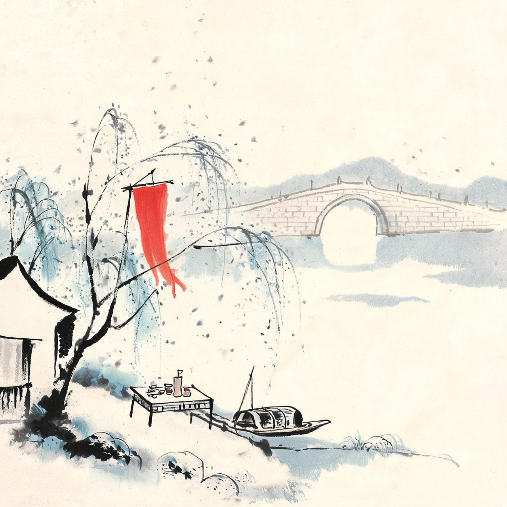
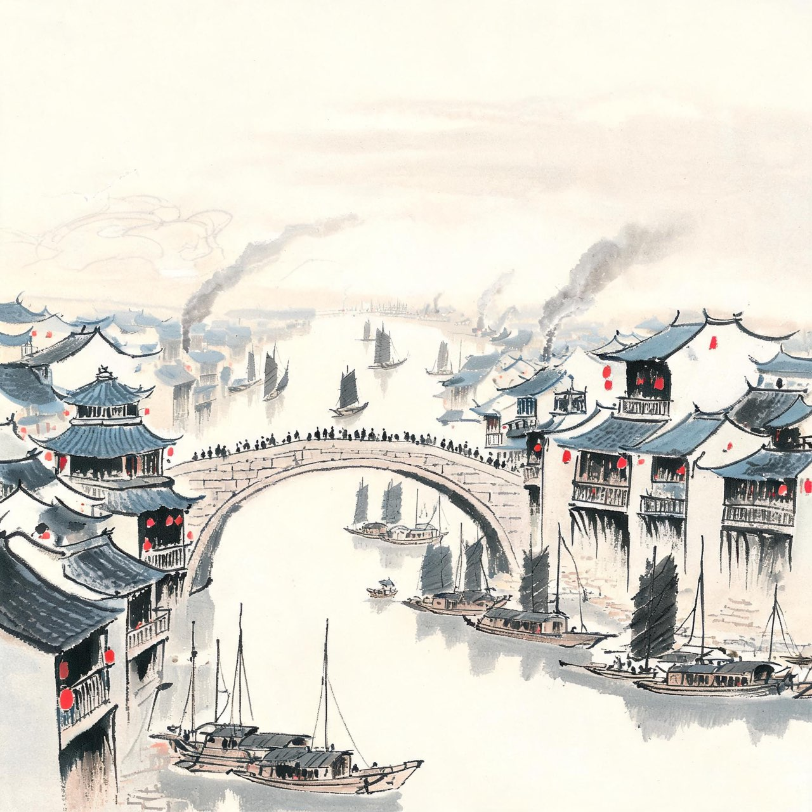
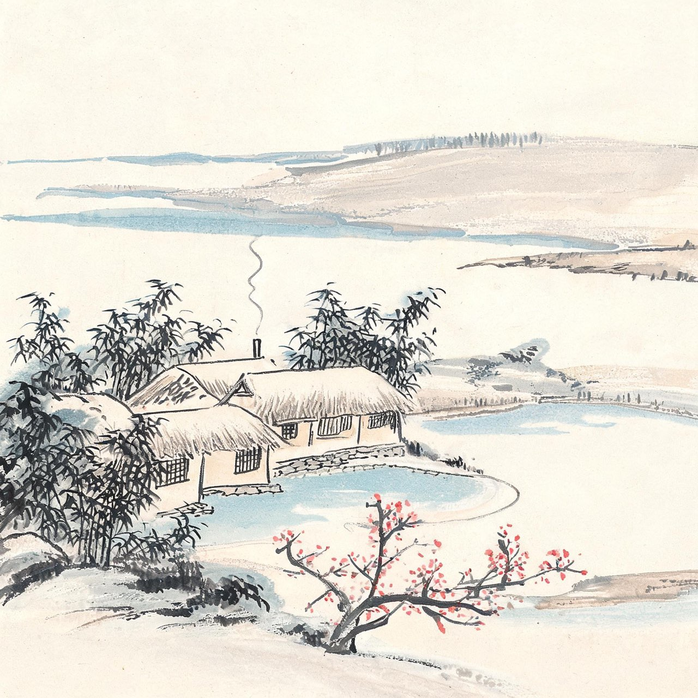

李白 · 724-740
远游
仗剑去国
出三峡，江面豁然开朗。群山退到身后，平原一望无际——你第一次看见天地这么大——
渡荆门送别
渡远荆门外，来从楚国游。
山随平野尽，江入大荒流。
月下飞天镜，云生结海楼。
仍怜故乡水，万里送行舟。
注
- 荆门：今湖北荆门南，出三峡后的江面开阔处
- 故乡水：指从蜀地流来的长江水，诗人不说自己思乡，反说水送自己
事件·仙风道骨
江陵。你在这里遇见了一个人——司马承祯，当朝道教宗师，连皇帝都请他讲经。
你慕名往谒。据你后来回忆，这位宗师看了你一眼，只说了一句话：有仙风道骨，可与神游八极之表。
你听懂了。这不是客套，是同道相认。
你当场写下一篇《大鹏遇希有鸟赋》，以大鹏自比，以希有鸟比承祯——大鹏一怒振海，击水三千，抟风九万。后来你悔其少作，中年重作删改，定名《大鹏赋》。
从江陵开始，你有了终身的自我形象：大鹏。
注
- 司马承祯：上清派第十二代宗师，武则天、睿宗、玄宗均曾召见
- '有仙风道骨'语出李白《大鹏赋序》：'余昔于江陵见天台司马子微，谓余有仙风道骨，可与神游八极之表'——自述信史级
沿长江东下，你在庐山停了脚。山北的瀑布从峰顶跌落，水声如雷——
望庐山瀑布
日照香炉生紫烟，遥看瀑布挂前川。
飞流直下三千尺，疑是银河落九天。
注
- 存诗两首，此为其二（七绝），其一为五古'西登香炉峰'。通行选本多取其二
- 香炉：庐山香炉峰，因峰顶云雾状如香烟而得名
- '挂前川'一作'挂长川'，版本有异文；系年另有开元十三年（725）出蜀途中说

金陵酒肆
你到了金陵。六朝金粉之地，酒肆比米铺多。
你花钱像流水——不，像江水。吴姬压酒唤客，金陵子弟来相送，你一杯一杯复一杯，谁劝都不推。
有人问你要去哪。去哪？天下之大，处处可去。你不知道目的地，因为处处都是目的地。
临别那天，你写下六句：风吹柳花满店香，吴姬压酒唤客尝。金陵子弟来相送，欲行不行各尽觞。请君试问东流水，别意与之谁短长。
离别本来是苦的。你把它写成了酒的余味。
注
- 《金陵酒肆留别》：'风吹柳花满店香，吴姬压酒唤客尝。金陵子弟来相送，欲行不行各尽觞。请君试问东流水，别意与之谁短长'
- 压酒：榨酒时压槽取汁，吴地新酒风俗
- 首次游金陵系年约726，此后多次往来

散金三十万
扬州。这座运河边的巨埠，商贾云集，歌吹沸天。
你在这里住了一年。不到一年，散金三十余万——全给了别人。落魄的公子，你救济；有病的旅人，你付账。谁上门求诗求钱，你都给。
这是你自己在信里写的：曩昔东游维扬，不逾一年，散金三十余万，有落魄公子，悉皆济之。
后人算过，三十万钱约合当时百余户人家一年的口粮。有人笑你傻，你不辩解。钱是身外之物，你是这么信的——此后的颠沛潦倒里，你从没为散出去的钱后悔过。
这年秋天，你病倒在旅舍。身边无人可问，客病无人送药。夜里病榻上，你第一次尝到：豪情之外，还有一个东西叫孤独。
注
- 散金三十余万：李白自述，见《上安州裴长史书》，信史级
- '约合数千户一年口粮'的换算为演绎，供体感参照
- 扬州一年系年取开元十四年（726）前后说
病愈后的一个秋夜，你独自住在旅舍。半夜醒来，床前一片白——
静夜思
床前看月光，疑是地上霜。
举头望山月，低头思故乡。
注
- 版本异文重要：宋刊本作'床前看月光''举头望山月'；今通行本'床前明月光''举头望明月'为明清刊本所改。正文从宋本（底本原则）
- 床：或解为井栏（银床），或为坐具，或即卧床，诸说不一
- 本篇系年无定说，此处取扬州旅居（726前后）语境，仅作叙事安排，非考订结论

酒隐安陆
出蜀两年后，你在安陆停下来，娶了前宰相许圉师的孙女。
许家是高门。你入赘般住进岳家——对你这样心高气傲的人，这本该是屈辱，你却过得心安理得：夫人贤惠，山中有酒，日子安静。
你自陈这十年：酒隐安陆，蹉跎十年。蹉跎是自嘲，也是实情——十年里你磨了剑，写了诗，遍谒湖北的名流，想走一条干谒仕进的路。
路没走通。但从安陆南下二百里就是江夏，江夏有黄鹤楼。那年三月，你的老朋友孟浩然要从那里去扬州。
你去送他。
注
- 许氏为许圉师孙女：见《新唐书》及李白诗文自述，婚姻约在开元十五年（727）
- '入赘般住进岳家'：学界有入赘说与置产说之辨，此处从叙事需要作模糊处理
三月，柳絮如烟，花开似锦。孟夫子的船就要开了。你站在黄鹤楼上，看他登船——
黄鹤楼送孟浩然之广陵
故人西辞黄鹤楼，烟花三月下扬州。
孤帆远影碧空尽，唯见长江天际流。
注
- 孟浩然长李白十二岁，二人忘年之交，此为唐诗中最著名的送别之一
- 系年取约730说，另有728等异说
- '唯'一作'惟'；'远影'一作'远映'，'碧空尽'一作'碧山尽'，版本有异文